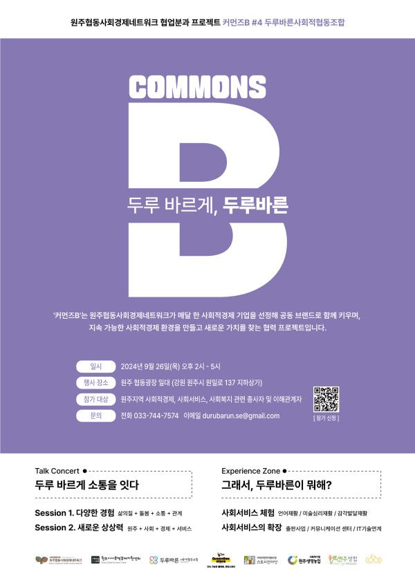
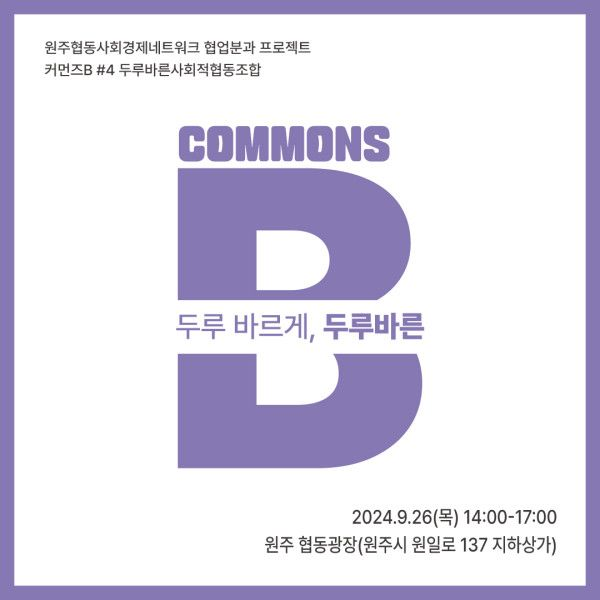
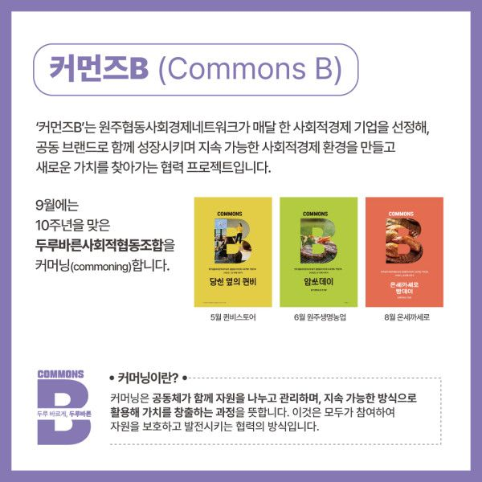
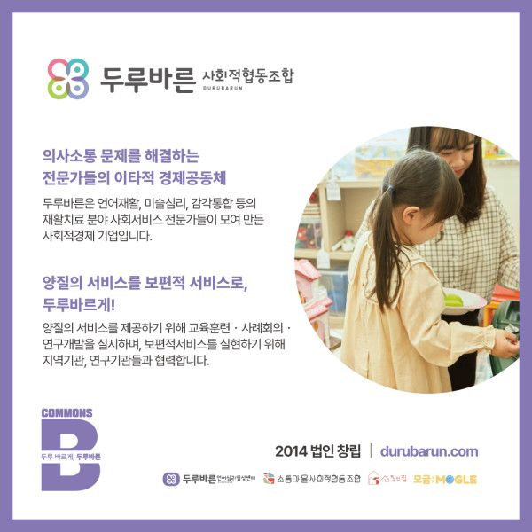
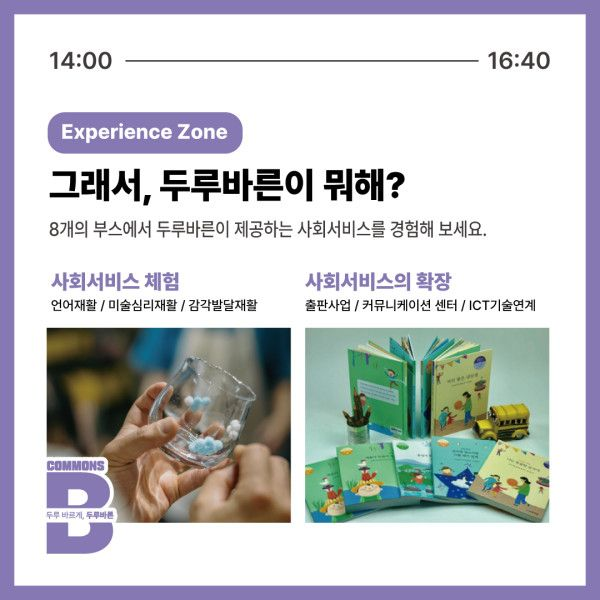
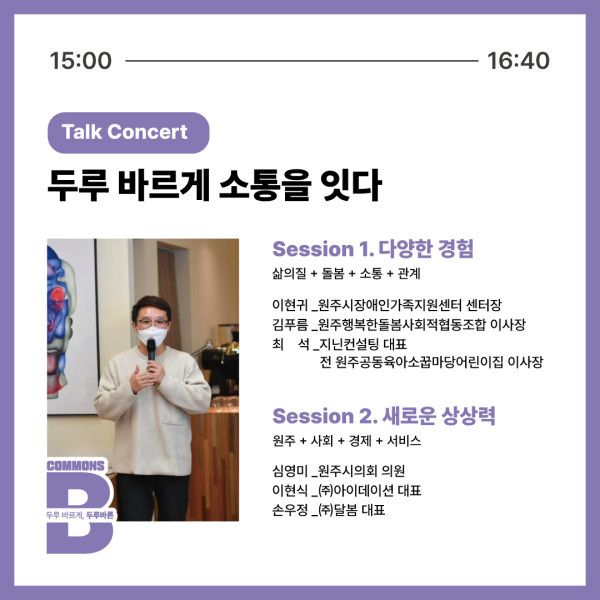
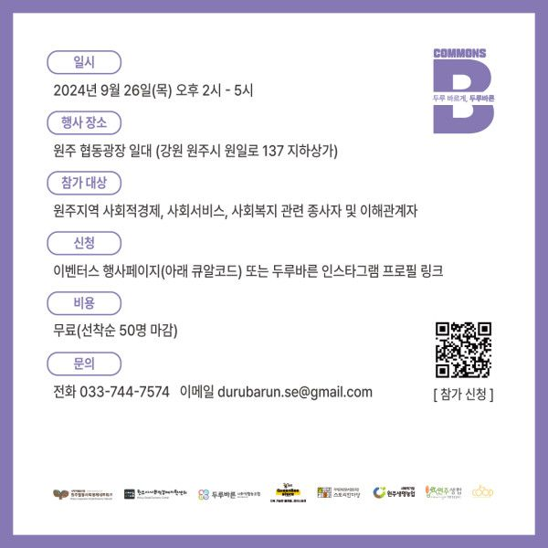

[두루바른사회적협동조합] 사회서비스분야 커먼즈B '두루, 바르게'
올해 네트워크에서는 협업분과와 지역사회통합돌봄분과가 운영되고 있는데요.
9월 26일 목요일에 협업분과의 네번째 커먼즈B, 두루바른사회적협동조합의 행사가 열립니다!
올해로 10주년을 맞이한 두루바른이 창립총회를 네트워크 교육장에서 개최했었다고 해요. 기념하며 협동광장에서 커먼즈B 행사 겸 10주년 행사를 진행합니다.
두루바른의 사업영역을 소개하고, 체험해보고, 토크콘서트를 통해 사회서비스와 돌봄에 대해 이야기나누는 시간을 가집니다.
당일 행사에서 스티커투어에 참여하면 기념품도 드린다고 하니 참석하셔서 두루바른을 즐기고, 10주년도 축하해주세요
-
* 시간 : 9월 26일(목) 오후2시-5시
* 장소 : 원주 협동광장 일원(원일로 137 지하상가)
* 주차 : 보건소 주차장 이용
✨두루바른을 알고싶은 분들 누구나 참석 가능합니다✨
* 30초면 끝나는 사전신청링크 ➡️ https://event-us.kr/durubarun/event/91827
* 두루바른사회적협동조합이 궁금하다면? ➡️ https://durubarun.com/